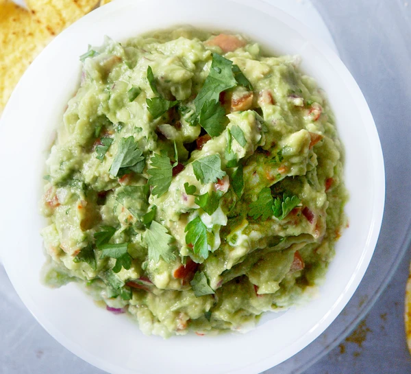

GUAC

Details
Ingredients
- 1 large ripe tomato
- 3 avocados, very ripe but not bruised
- juice 1 large lime
- handful coriander, leaves and stalks chopped, plus a few leaves, roughly chopped, to serve
- 1 small red onion, finely chopped
- 1 chilli, red or green, deseeded and finely chopped
- tortilla chips, to serve
Method
- Use a large knife to pulverise 1 large ripe tomato to a pulp on a board, then tip into a bowl.
- Halve and stone the 3 avocados (saving a stone) and use a spoon to scoop out the flesh into the bowl with the tomato.
- Tip the juice of 1 large lime, a handful of roughly chopped coriander, 1 finely chopped small red onion and 1 deseeded and finely chopped red or green chilli into the bowl, then season with salt and pepper.
- Use a whisk to roughly mash everything together. If not serving straight away, sit a stone in the guacamole (this helps to stop it going brown), cover with cling film and chill until needed.
Lasagne